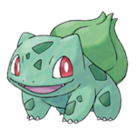
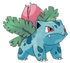
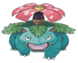
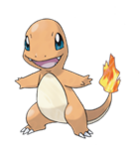
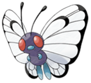
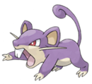

Aixo es un text que es troba dins d'un blockquote que al seutemps es una figura amb la classe .blockquote corresponent
| # | Imatge | Nom | Tipus1 | Tipus2 | Descripcio |
|---|---|---|---|---|---|
| 1 |  | Bulbasur | Planta | Veri | Bulbasaur és un petit llangardaix tetràpode. El seu color és verd amb taques de verd fosc. Quan un Bulbasaur neix, no té un bulb a la esquena, sinó una llavor que aviat es converteix en un gran bulb de flor. |
| Fase | Evolucio | Imatge | Nivell | Descripcio | |
| 1 | Ivysaur |  | 16 | Essent la forma evolucionada de Bulbasaur, el bulb que tenia abans s’ha desenvolupat en un capoll de seda, que creix sota la llum solar. A mesura que el capoll creix, el pes afegit treu a Ivysaur la capacitat de posar‑se a dues potes. | |
| 2 | Venusaur |  | 32 | El perfum que emet la seva flor, de colors brillants, calma els enemics durant el combat, així com els humans. | |
| 2 |  | Charmander | Foc | Charmander, com les seves formes evolucionades, Charmeleon i Charizard, té una flama a la punta de la cua; es diu que la flama indica la seva força vital, cremant amb més o menys intensitat segons les seves forces. | |
| 3 |  | Butterfree | Bestiola | Volador | Butterfree és un insecte atractiu, amb grans ulls vermells, un cos lila, dues mans i dues potes (en lloc de sis com en les papallones autèntiques). Les seves ales blanques estan cobertes d’espores tòxiques, i repellen l’aigua. |
| 4 |  | Rattata | Normal | Rattata s’assembla molt a un ratolí o una rata. És un quadrúpede amb pelatge lila (blanc cremós a la panxa), ulls vermells, dos bigotis gruixuts i una cua corba. | |